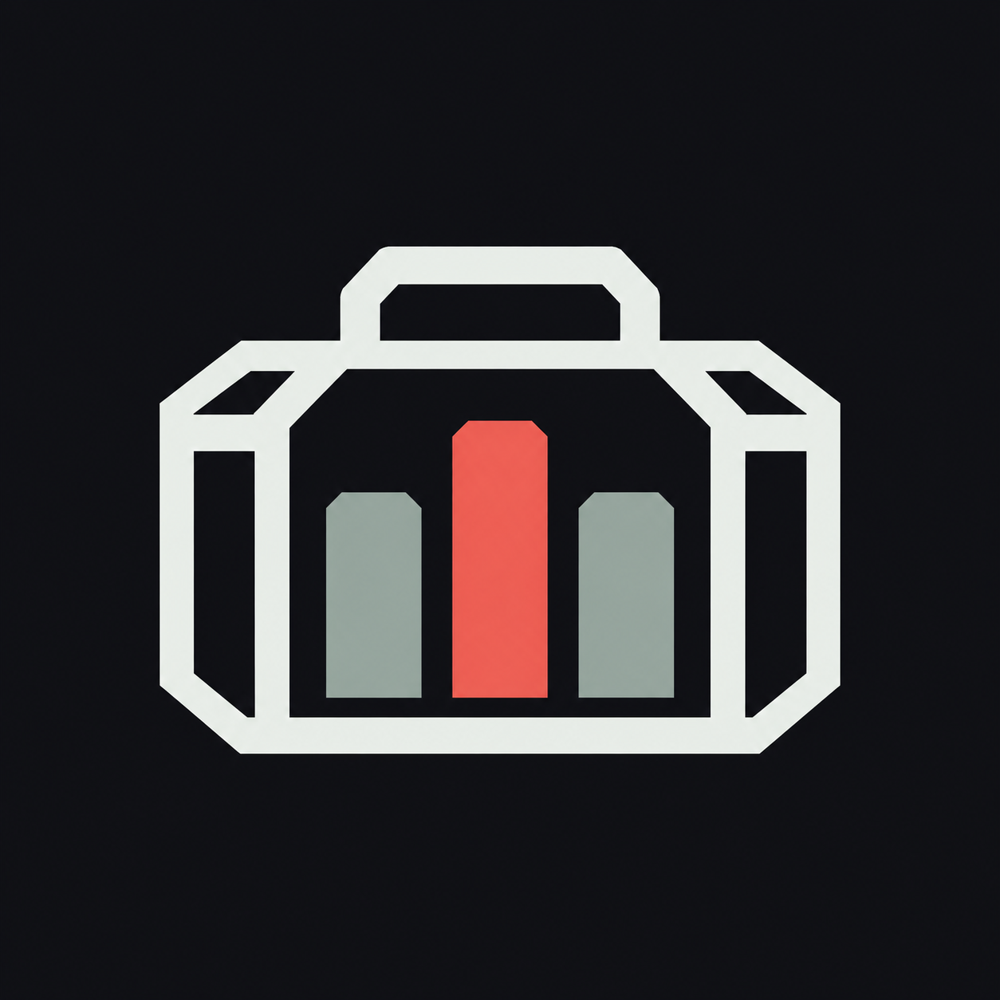
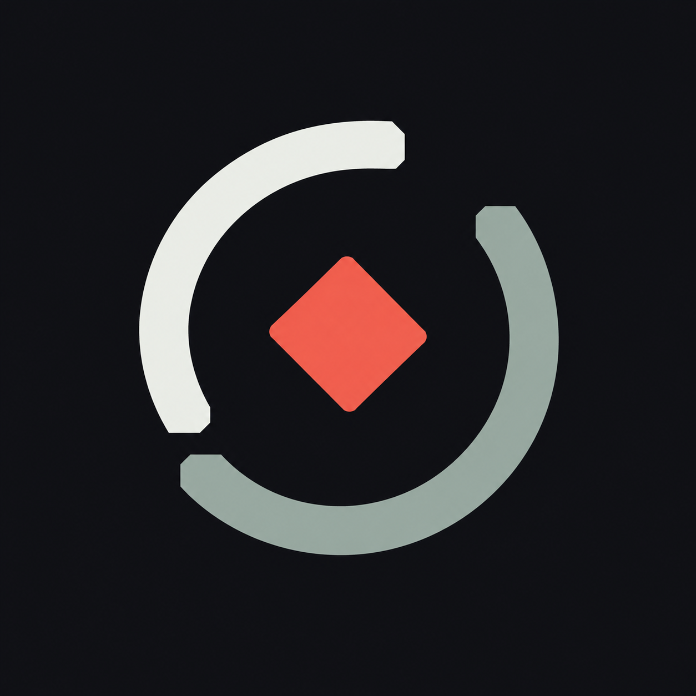
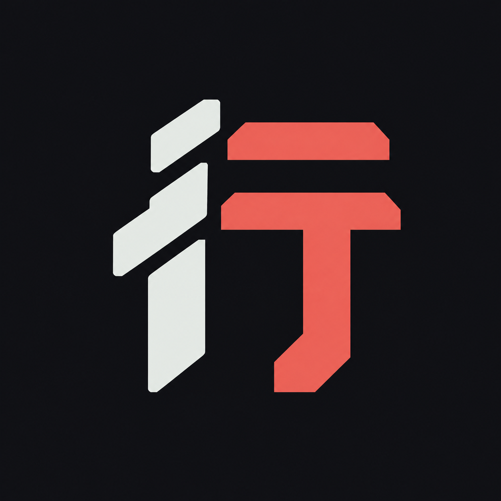
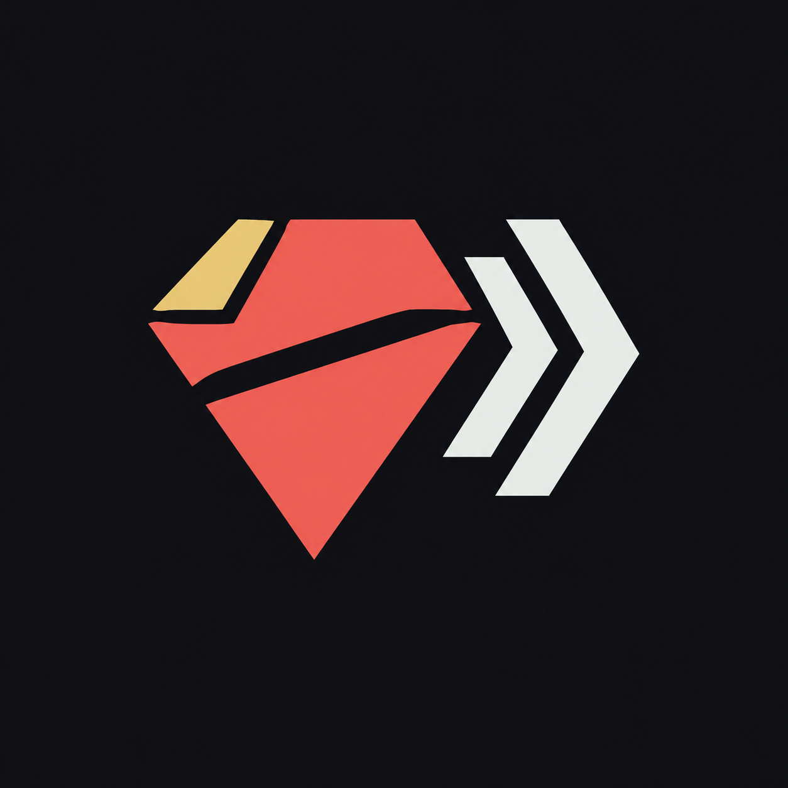

推荐 · 功能表达清晰
声纹货箱货箱 × 声纹
用行商货箱包住三段声纹，第一眼就能联想到“听声音识别货物”。
缩小预览
概念图等比显示32px48px64px
概念图等比显示32px48px64px
四个方向都沿用项目的深灰、灰绿与红色视觉语言。点击大图查看原图；下方可比较缩小后的轮廓。选中方向后可继续细化为透明图标。

用行商货箱包住三段声纹，第一眼就能联想到“听声音识别货物”。

开放的回声圆环围绕红色物品，轮廓简洁，偏向监听与探测的科技感。

把“行”字化成硬朗的几何笔画，红白分色，强化项目自己的名称与辨识度。

以红色晶体、金色切面和回声箭头表达高价值物品，视觉更醒目。